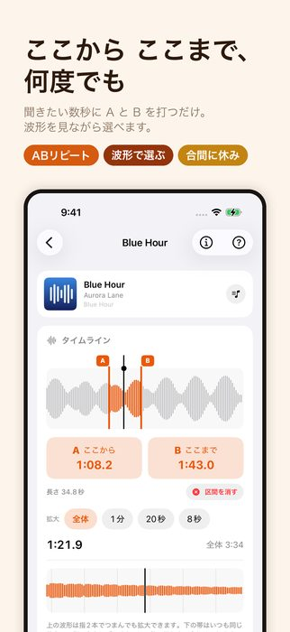
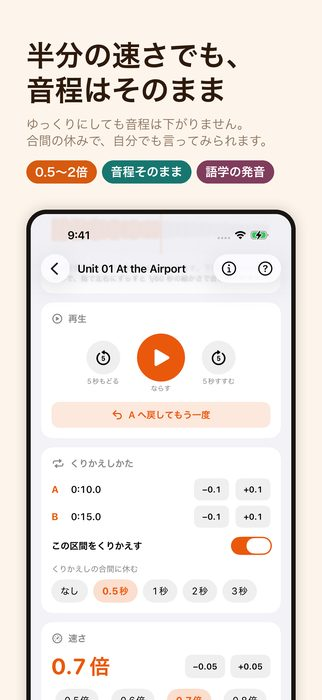
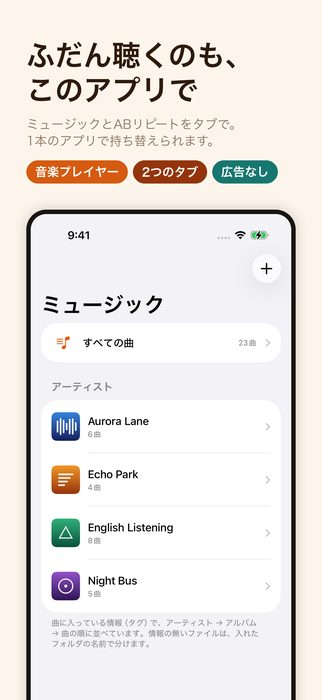
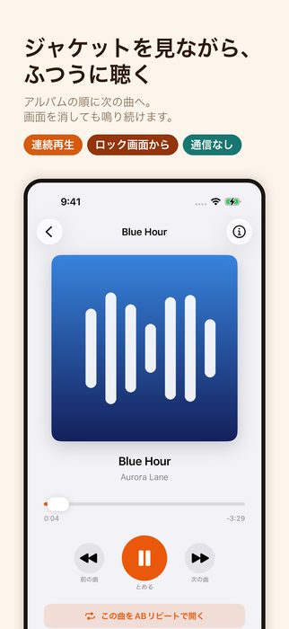
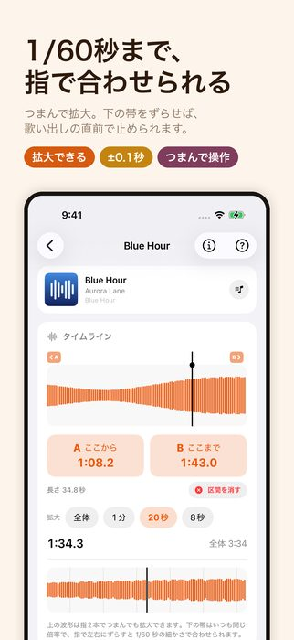
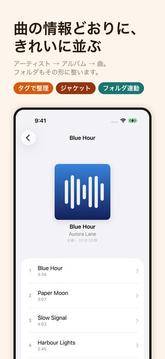
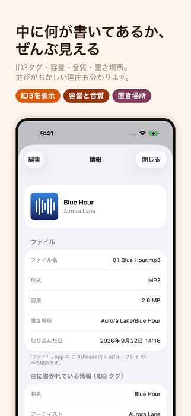
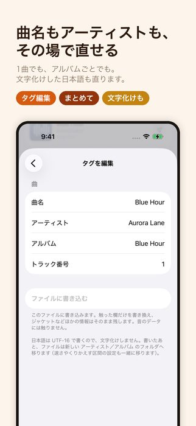
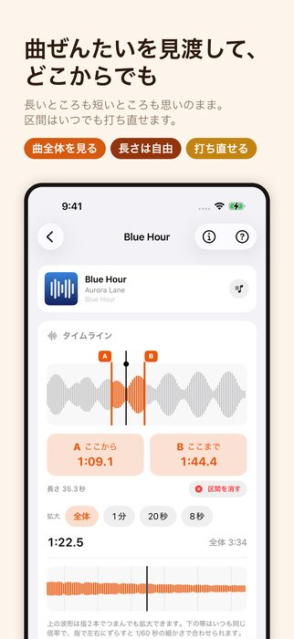
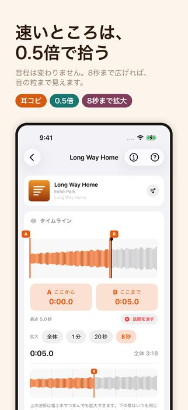

ここからここまでを、何度でも。ゆっくりにしても音の高さは変わらない（iOS 17 以降）










語学——聞き取れなかった一言に A と B を打ち、口が慣れるまでくりかえします。 合間の休みがあるので、聞いたすぐあとに自分でも言ってみられます。シャドーイングも、 発音の確かめも、この1画面で続きます。
耳コピ——速いフレーズを 0.5 倍まで落としても、音程は変わりません。 拾いたいところだけをくりかえし、8秒まで広げれば音の粒まで見えます。
A と B が揃うと、すぐにその区間だけをくりかえします。くりかえしの合間には 0.5 秒の休みが入ります（なしにもできます）。
この隙間があるかないかで、使い道が変わります。休みがあれば、聞いたすぐあとに 自分で言ってみる・弾いてみる余白ができます。シャドーイングも、 1フレーズずつの練習も、この間があって初めて成り立ちます。
0.5 倍から 2 倍まで、0.05 刻み。速さを落としても音程は下がりません。 早口の台詞も、速いフレーズも、ついていける速さまで落として聞けます。
タイムラインは、曲の全体・1分・20秒・8秒に拡大できます（ボタンでも、指2本でつまんでも）。 その下にはいつも同じ倍率の帯があり、指で左右にずらすと 1/60 秒の細かさで 位置を決められます。A・B のつまみを直接動かすことも、±0.1秒 のボタンで詰めることもできます。
下のタブで「ミュージック」と「ABリピート」を持ち替えられます。ミュージックのほうは ジャケットと曲名と次へ送るボタンだけの、素直な画面です。アルバムの順に次の曲へ進み、 画面を消しても鳴り続け、ロック画面からも操作できます。
ファイルに書き込まれている情報（ID3 タグ）を読んで、アーティスト → アルバム → 曲の 順に並べます。ジャケットも一覧と再生画面に出ます。タグの無いファイルは、入れたフォルダの 名前で分けます。
曲名・アーティスト・アルバム・トラック番号は、アプリの中から書き換えられます。 1曲だけでも、アルバムごと・アーティストごとまとめてでも。書き換えると、「ファイル」App の 中の置き場所も アーティスト名 → アルバム名 の形に移し替えるので、iPhone の中の フォルダと画面の並びが食い違いません。
MP3 のために作りましたが、m4a・wav・aiff なども開けます。一覧の右上の ＋ から、 曲を1本ずつ選ぶか、フォルダごと入れられます。パソコンから「ファイル」App の このiPhone内 > ABループレイ へ直接入れてもかまいません。
聴けません。Apple Music や iTunes で買った曲は保護がかかっていて、ほかのアプリからは 開けない決まりになっています。このアプリが扱うのは、「ファイル」App に入っている ふつうの音声ファイルです。
そのために作った機能がそのまま向いています。聞き取れない数秒に A と B を打ち、 0.7 倍くらいまで落として、合間の休みで自分でも言ってみる——この繰り返しが 1画面でできます。
使えます。速いフレーズを半分の速さにしても音程が変わらないので、そのまま 楽器で確かめられます。波形を 8 秒まで拡大すれば、音の立ち上がりが目で見えます。
送られません。このアプリは通信の仕組みそのものを持っていません。 すべて端末の中だけで処理します。
使えます。日本語・英語・簡体字中国語・繁体字中国語・韓国語・ドイツ語・ フランス語・スペイン語・ポルトガル語（ブラジル）・イタリア語の10言語に 対応しています。iPhone の言語設定にあわせて切り替わります。
ご質問・ご要望はお問い合わせからどうぞ。 プライバシーポリシーもあわせてご覧ください。
{kind=link}
{kind=link}
{kind=link}
{kind=link}
{kind=link}
{kind=link}
{kind=link}
{kind=link}
{kind=link}
{kind=link}